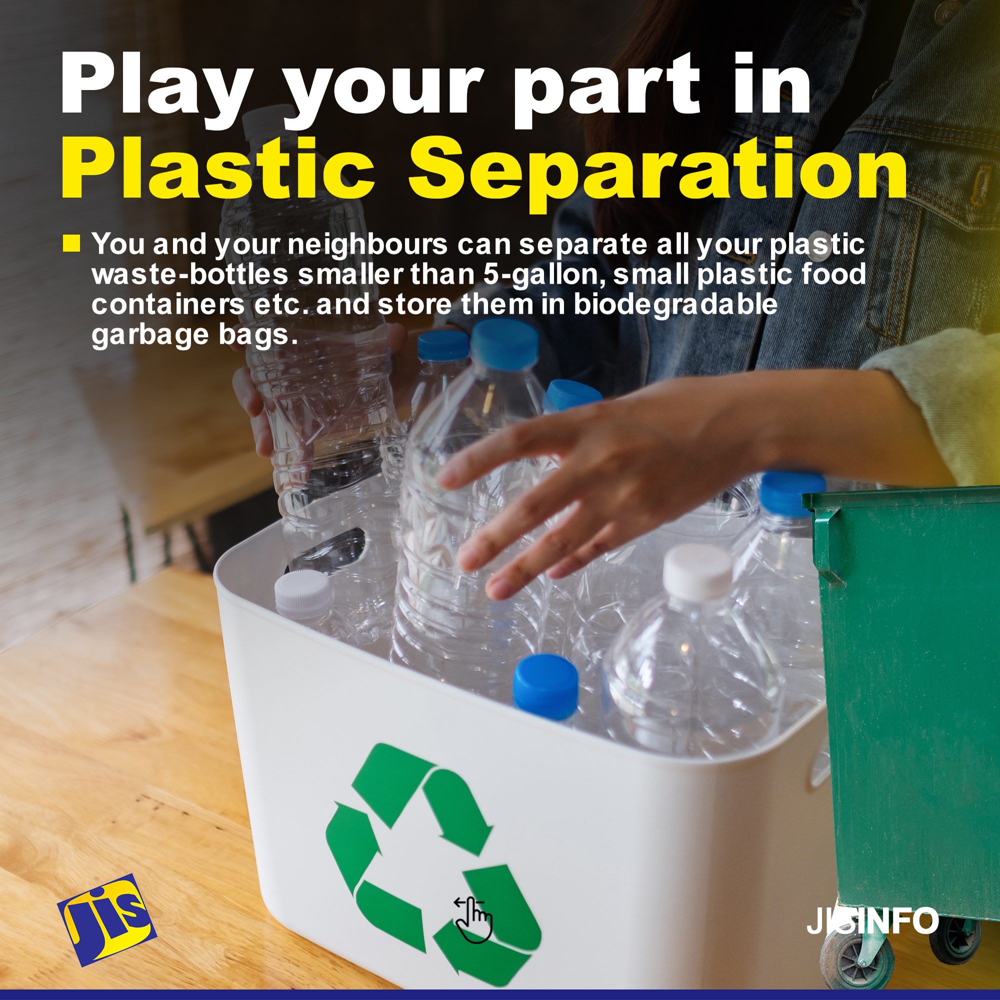
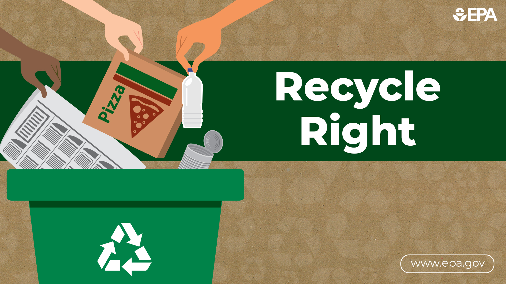
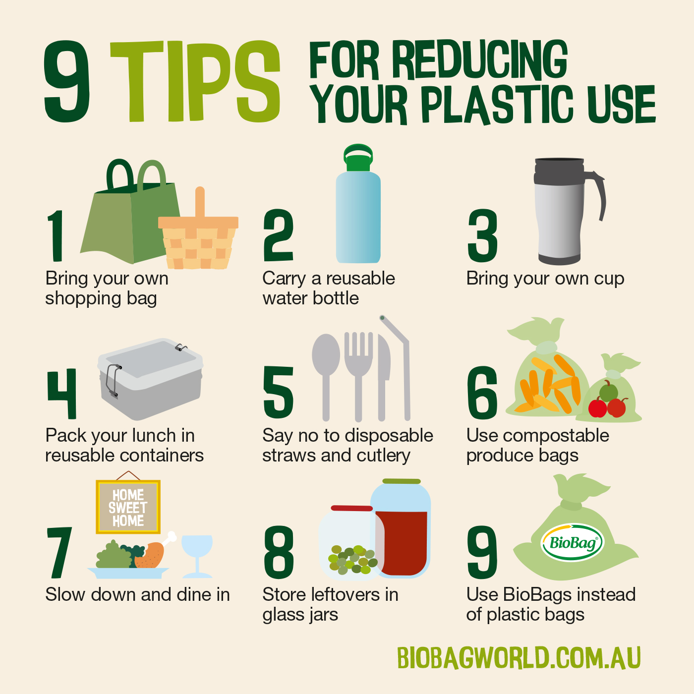
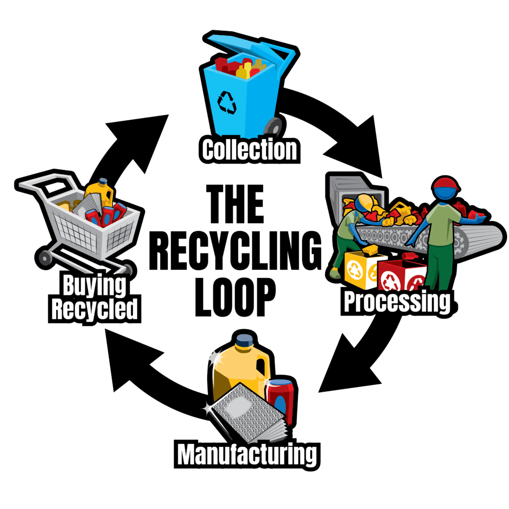

Sustainable Practices
Explore sustainable practices and initiatives related to recycling.
Tip 1: Separate Materials
Separate recyclable materials such as paper, plastic, glass, and metal. This makes the recycling process more efficient.
Tip 2: Check Local Recycling Guidelines
Be aware of your local recycling guidelines. Different regions may have specific rules for recycling different materials.
Tip 3: Reduce Plastic Usage
Avoid single-use plastic items. Opt for reusable alternatives to reduce plastic waste.
Tip 4: Recycle Electronics Responsibly
When disposing of electronic devices, recycle them through designated e-waste recycling programs to prevent environmental harm.

Tip 5: Compost Organic Waste
Composting organic waste reduces landfill waste and enriches soil. Create a composting system for kitchen scraps and garden waste.

Tip 6: Buy Recycled Products
Support the recycling industry by purchasing products made from recycled materials. Look for the recycling symbol on packaging.
Tip 7: Participate in Community Cleanup Events
Join local community cleanup events to contribute to a cleaner environment. Properly dispose of collected waste.
 Return to Home page
Return to Home page